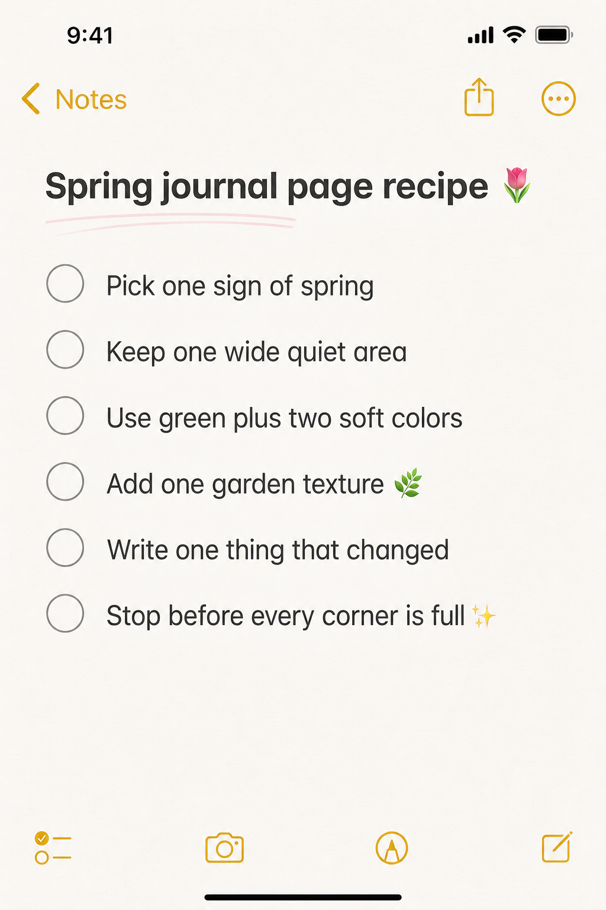
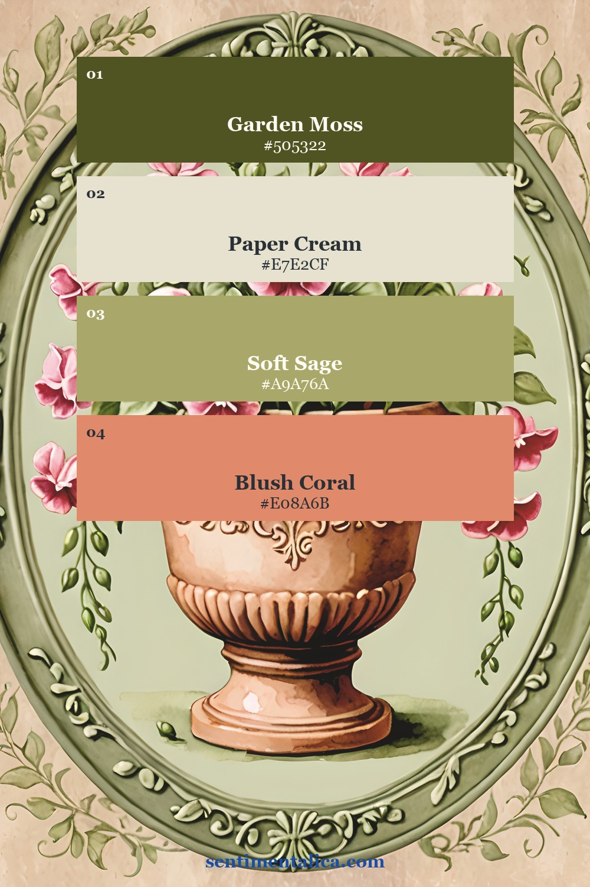
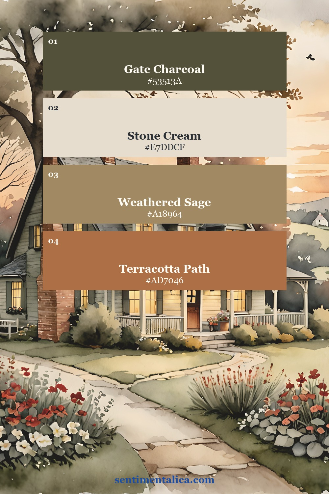
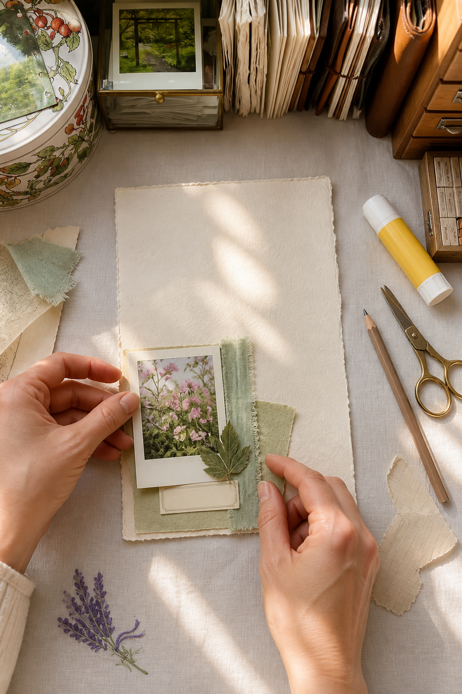
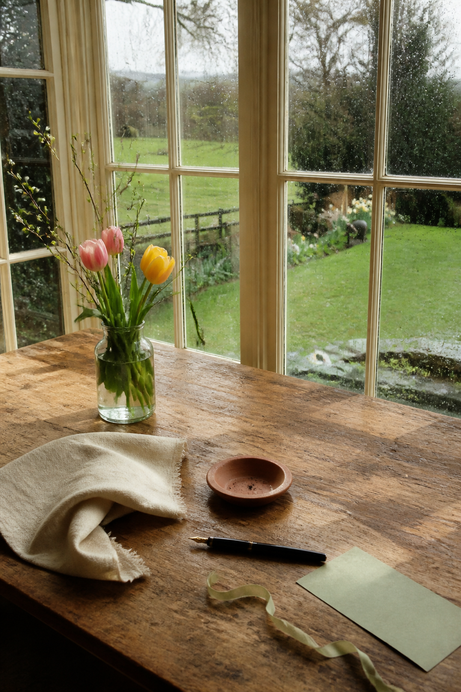
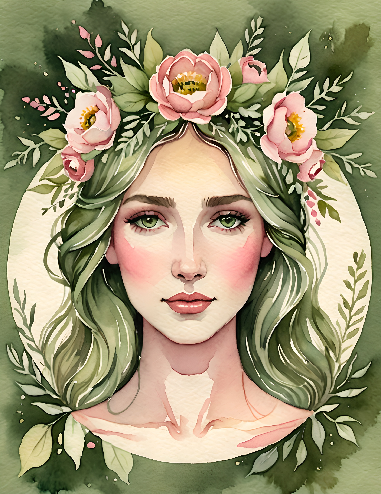
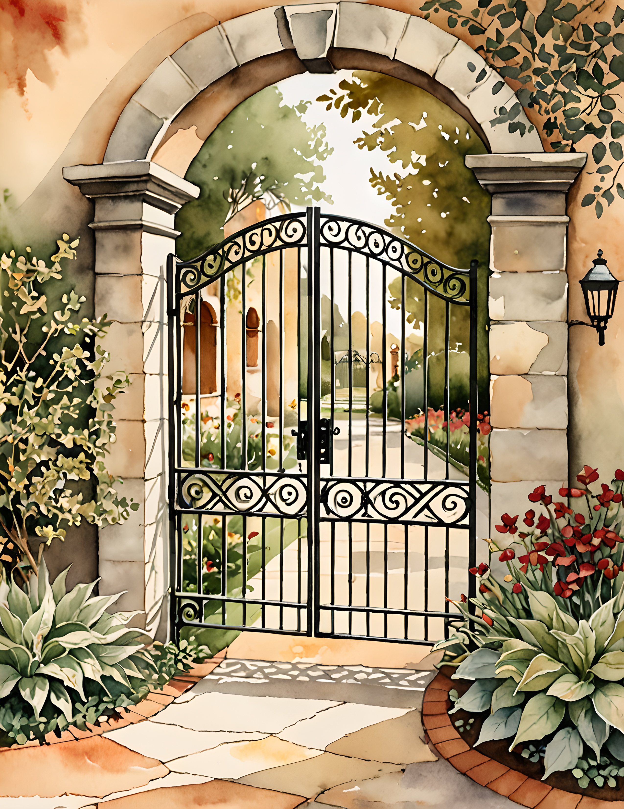

Spring junk journal ideas can become crowded surprisingly fast. A flower, a butterfly, a seed packet, green ribbon, lace, birds, and pastel paper all seem right for the season. Put them on one page, though, and the fresh feeling disappears. The solution is not to avoid spring details. It is to choose one clear sign of the season and give it enough quiet space to feel alive.

Choose one sign of spring
Begin with a single observation, not a shopping list of motifs. It might be the first tulip, rain on the window, a newly green path, muddy shoes by the door, or the evening staying light for ten minutes longer. That one detail becomes the page's reason for existing.
Let the focal image carry that idea. If you choose a flower, the supporting pieces do not also need flowers. A plain label, faded ledger scrap, narrow ribbon, or torn cream paper can support it without competing. Repetition still works, but make it subtle: repeat the flower's pink in a thread or a pencil mark rather than adding another large bouquet.
Use green plus two soft colors
A limited palette is the quickest way to make separate scraps look intentional. Start with one green, then choose two companions. Sage, cream, and blush feel quiet. Moss, stone, and terracotta feel more like a garden path after rain. Pale yellow can work as a tiny accent, but it does not need to appear in every layer.


Before gluing, place the possible pieces beside one another. Remove anything that introduces a fourth strong color. This small edit often does more than adding another decorative element.
Keep one wide quiet area
Quiet space can be blank paper, a pale wash, or an area with only faint writing. It gives the eye somewhere to rest and leaves room for a memory later. Try keeping at least half of the page calm. Build one cluster in a corner or along one edge, then stop before the materials travel into every empty place.

Test the arrangement without glue. Move the focal image a little off center, tuck fabric beneath one side, and let a leaf cross an edge. Take a phone photo, remove one piece, and take another. The calmer version is usually easier to recognize in a photograph than while you are still leaning over the desk.
Write the change you actually noticed
A seasonal page becomes personal when it records change. Write one sentence about what is different now: the window stayed open through breakfast, the pavement smelled like rain, or the first green tip appeared in a familiar pot. Specific observations feel more intimate than a general quote about spring.
If you want a no-pressure place to practise the arrangement, download the 100 free floral pictures. Print one flower, combine it with paper already on your desk, and use the checklist above as your stopping rule.

See how a spring theme can change direction
The real pages below show two related but distinct versions of a cottage garden mood. Garden Path leans into pink flowers, leafy frames, and soft green. Garden Gate adds architecture and the feeling of walking toward a quiet place. Use them as visual references, or choose the collection that already matches the story you want to tell.



A fresh spring page does not need to prove that it is spring. One flower, one observed change, and one area left open can say enough. Find more practical prompts and page-building guides in the Sentimentalica journal.